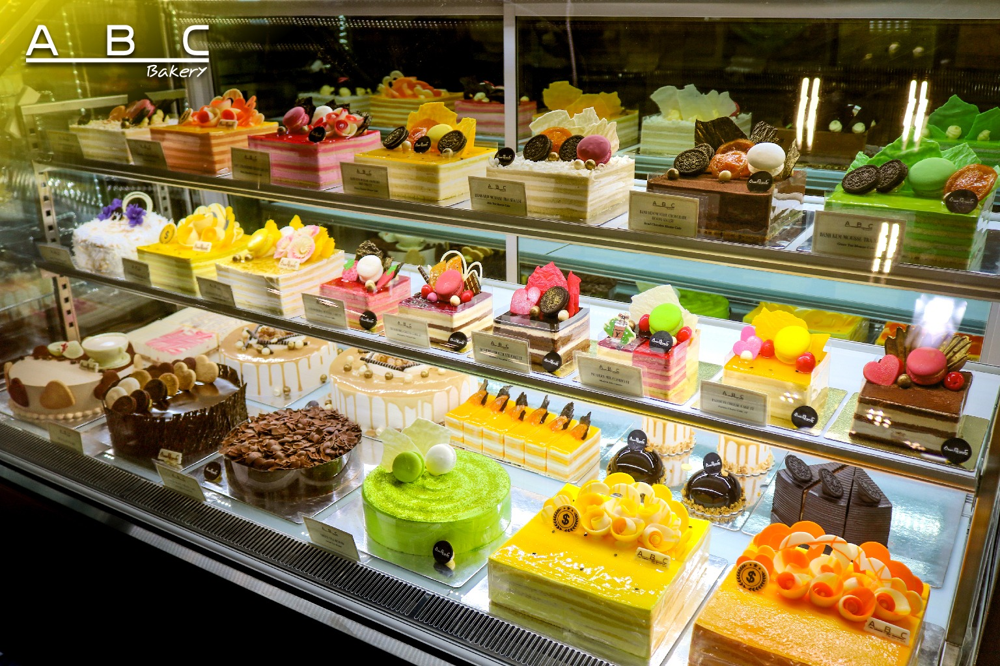

GIỚI THIỆU
Zap Cake là một thương hiệu bánh ngọt nổi tiếng tại Việt Nam, được thành lập với mục tiêu mang đến những trải nghiệm ẩm thực tuyệt vời cho khách hàng. Chúng tôi tự hào về chất lượng sản phẩm và dịch vụ, luôn đặt sự hài lòng của khách hàng lên hàng đầu. Với đội ngũ nhân viên chuyên nghiệp và đam mê, Zap Cake không ngừng sáng tạo và phát triển các loại bánh mới, từ những chiếc bánh kem truyền thống đến những món tráng miệng hiện đại. Chúng tôi cam kết sử dụng nguyên liệu tươi ngon và an toàn, đảm bảo mỗi sản phẩm đều đạt tiêu chuẩn cao nhất. Hãy đến với Zap Cake để thưởng thức những chiếc bánh tuyệt vời và trải nghiệm dịch vụ tận tâm. Chúng tôi luôn sẵn sàng phục vụ bạn và mang đến những khoảnh khắc ngọt ngào trong cuộc sống.

DẤU ẤN HÀNH TRÌNH
Zap Cake đã trải qua một hành trình dài để trở thành thương hiệu bánh ngọt được yêu thích tại Việt Nam. Từ những ngày đầu thành lập, chúng tôi đã không ngừng nỗ lực để mang đến những sản phẩm chất lượng và dịch vụ tốt nhất cho khách hàng. Trong suốt quá trình phát triển, Zap Cake đã nhận được sự tin tưởng và ủng hộ từ cộng đồng, điều này đã thúc đẩy chúng tôi tiếp tục đổi mới và nâng cao chất lượng sản phẩm. Chúng tôi tự hào về những thành tựu đã đạt được và cam kết sẽ tiếp tục mang đến những trải nghiệm ẩm thực tuyệt vời cho khách hàng trong tương lai. Hành trình của Zap Cake là minh chứng cho sự đam mê, sáng tạo và cam kết với chất lượng. Chúng tôi hy vọng sẽ tiếp tục đồng hành cùng khách hàng trên con đường khám phá hương vị ngọt ngào và tạo ra những kỷ niệm đáng nhớ.